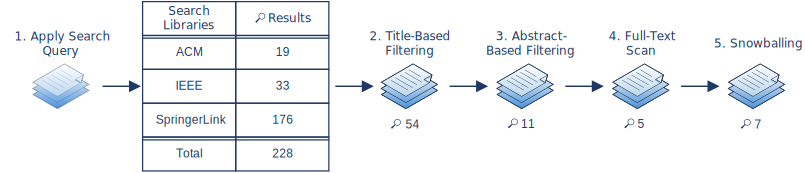

Methodology: Selecting the ADLs
The following sections describe the approach and methodology used to determine the ADLs worth evaluating.
1. General Information
The approach to select relevant modeling languages is described in detail below. A systematic literature search was conducted to determine relevant modeling languages and possible criteria for later evaluating the chosen languages. First, the systematic literature search focused on existing reviews on modeling languages in the context of services and the cloud. However, mainly older reviews were found and no recent ones (the last review dates from 2019). Consequently, the reviews mainly consider older modeling languages whose relevance is not necessarily longer given today. Therefore, a second systematic literature search was conducted to find recently proposed or relevant modeling languages in the context of the cloud or microservices.
After each literature search, the selected modeling languages are mentioned with their respective selection reason(s). Additionally, the general exclusion reasons are also listed.
The final result with a summarization of the selected modeling languages can be found in the Final ADL Selection Result section.
2. First Systematic Literature Search: Finding Reviews
The first literature search focused on finding existing reviews on modeling languages in the context of services and the cloud.
2.1 Finding ADL Reviews
A description of the stepwise performed systematic literature search can be found here: Review Search
→ The Bibtex-file that includes the final selection of relevant literature:  7
Final Review Selection
7
Final Review Selection

 Search date: 2022-01-24 until 2022-01-26
Search date: 2022-01-24 until 2022-01-26
2.2 Selection of Suitable Architecture Description Languages
The information gained from the reviews is used to select appropriate ADLs for the evaluation.
 Exclusion Criteria:
Exclusion Criteria:
-
Identified domain does not include cloud services
-
Language covers only business-related aspects and not technical ones
-
Focus lies mainly on the provider of a cloud environment instead of the user
-
Language for platform-specific models
-
Focus lies only on runtime aspects (→ Quality Model considers design time)
-
Language objective focuses solely on aspects regarding, for example, service level agreement, service discovery or selection
-
Focus lies on one specific type of cloud environment/ delivery model (e.g. PaaS)
-
The language's intended users do not include application developers but focus on application user perspective
-
Application components cannot be considered when interactions between a cloud service and the cloud application are modeled
 Selection Criteria:
Selection Criteria:
- Language is still relevant: publishing of new versions, further paper publications, tool support is being further developed
Result:
| Modeling Language | Selection Reasons |
|---|---|
| TOSCA |
|
| CAMEL |
|
| CloudML (with CloudMF) |
|
Since the exclusion criteria apply to the other languages, a second systematic literature search was conducted to find further relevant modeling languages.
3. Second Systematic Literature Search: Finding Recent ADLs
The second systematic literature search was performed to find further recently proposed or relevant modeling languages in the context of the cloud or microservices.
3.1 Finding Recent ADLs
A description of the stepwise performed systematic literature search can be found here: Recent ADLs Search
→ The Bibtex-file that includes the final selection of relevant literature: 21
Final Recent ADL Selection

Search date: 2022-02-02
3.2 Selection of Suitable Architecture Description Languages
For the selection aspects like the language's relevant and main focus/scope were considered.
Exclusion Criteria:
-
Too restricted on specific aspects
-
Another approach is based on it
-
Based on another language which is already being evaluated
Selection Criteria:
-
Language is still relevant: publishing of new versions, further paper publications, tool support is being further developed
-
Enough explanatory and descriptive papers or documentation for modeling language available
-
Ideally, supportive tools provided
Result:
| Modeling Language | Selection Reasons |
|---|---|
| LEMMA |
|
| Context Mapper |
|
4. Final ADL Selection Result
The following table summarizes the final selection of modeling languages to be evaluated in the further course of the master thesis. Additionally, a non-exhaustive list of the primary reference(s) for the individual modeling language is provided.
| TOSCA | OASIS TOSCA Binz, T., Breitenbücher, U., Kopp, O., & Leymann, F. (2014). TOSCA: Portable Automated Deployment and Management of Cloud Applications. In Advanced Web Services (pp. 527-549). Springer. https://doi.org/10.1007/978-1-4614-7535-4_22 |
| CAMEL | Achilleos, A. P., Kritikos, K., Rossini, A., Kapitsaki, G. M., Domaschka, J., Orzechowski, M., ... & Papadopoulos, G. A. (2019). The Cloud Application Modelling and Execution Language. Journal of Cloud Computing, 8(1), (pp. 1-25). https://doi.org/10.1186/s13677-019-0138-7 |
| CloudML (with CloudMF) | Ferry, N., Rossini, A., Chauvel, F., Morin, B., & Solberg, A. (2013, June). Towards Model-Driven Provisioning, Deployment, Monitoring, and Adaptation of Multi-Cloud Systems. In 2013 IEEE Sixth International Conference on cloud computing (pp. 887-894). IEEE. https://doi.org/10.1109/CLOUD.2013.133 Ferry, N., Song, H., Rossini, A., Chauvel, F., & Solberg, A. (2014, December). CloudMF: Applying MDE to Tame the Complexity of Managing Multi-Cloud Applications. In 2014 IEEE/ACM 7th International Conference on Utility and Cloud Computing (pp. 269-277). IEEE. https://doi.org/10.1109/UCC.2014.36 Ferry, N., Chauvel, F., Song, H., Rossini, A., Lushpenko, M., & Solberg, A. (2018, May). CloudMF: Model-Driven Management of Multi-Cloud Applications. In ACM Transactions on Internet Technology (TOIT), 18(2), (pp. 1-24). https://doi.org/10.1145/3125621 |
| LEMMA | LEMMA official Github page5 Rademacher, F., Sorgalla, J., Wizenty, P., Sachweh, S., & Zündorf, A. (2020). Graphical and Textual Model-Driven Microservice Development. In Microservices (pp. 147-179). Springer, Cham. https://doi.org/10.1007/978-3-030-31646-4_7 Rademacher, F., Sachweh, S., & Zündorf, A. (2020, August). Deriving Microservice Code from Underspecified Domain Models using DevOps-Enabled Modeling Languages and Model Transformations. In 2020 46th Euromicro Conference on Software Engineering and Advanced Applications (SEAA) (pp. 229-236). IEEE. https://doi.org/10.1109/SEAA51224.2020.00047 Rademacher, F., Sorgalla, J., Wizenty, P., & Trebbau, S. (2021). Towards Holistic Modeling of Microservice Architectures Using LEMMA. In Companion Proceedings of the 15th European Conference on Software Architecture 2021. CEUR-WS. http://ceur-ws.org/Vol-2978/mde4sa-paper2.pdf5 more literature by the authors can be found in their Github's Science section |
| Context Mapper | Official Context Mapper Website5 Kapferer, S., & Zimmermann, O. (2020). Domain-Specific Language and Tools for Strategic Domain-Driven Design, Context Mapping and Bounded Context Modeling. In Proceedings of the 8th International Conference on Model-Driven Engineering and Software Development (MODELSWARD) (pp. 299-306). SCITEPRESS. https://doi.org/10.5220/0008910502990306 Kapferer, S., & Zimmermann, O. (2020, September). Domain-Driven Service Design. In Symposium and Summer School on Service-Oriented Computing (pp. 189-208). Springer, Cham. https://doi.org/10.1007/978-3-030-64846-6_11 |
References
[Giallorenzo2021] S. Giallorenzo, F. Montesi, M. Peressotti, F. Rademacher and S. Sachweh, "Jolie and LEMMA: Model-Driven Engineering and Programming Languages Meet on Microservices," in Coordination Models and Languages. COORDINATION 2021. Lecture Notes in Computer Science, vol 12717. Springer, 2021, pp. 44–51. [Online]. Available: https://doi.org/10.1007/978-3-030-78142-2_17
[Rademacher2019a] F. Rademacher, S. Sachweh and A. Zündorf, "Aspect-Oriented Modeling of Technology Heterogeneity in Microservice Architecture," 2019 IEEE International Conference on Software Architecture (ICSA), 2019, pp. 21-30, [Online]. Available: https://doi.org/10.1109/ICSA.2019.00011
[Rademacher2020] F Rademacher, J Sorgalla, P Wizenty and S Trebbau, "Deriving Microservice Code from Underspecified Domain Models Using DevOps-Enabled Modeling Languages and Model Transformations," 2020 46th Euromicro Conference on Software Engineering and Advanced Applications (SEAA), 2021, [Online]. Available: https://doi.org/10.1109/SEAA51224.2020.00047
[Rademacher2021] D. Cruz, T. Wieland, and A. Ziegler, "Towards Holistic Modeling of Microservice Architectures Using LEMMA," Companion Proceedings of the 15th European Conference on Software Architecture 2021. CEUR-WS, 2021. [Online]. Available: http://ceur-ws.org/Vol-2978/mde4sa-paper2.pdf
[Sorgalla2020] J. Sorgalla, F. Rademacher, S. Sachweh, and A. Zündorf, "Modeling Microservice Architecture: A Comparative Experiment towards the Effectiveness of Two Approaches," Proceedings of the 35th Annual ACM Symposium on Applied Computing. Association for Computing Machinery, New York, NY, USA, pp. 1506–1509. https://doi.org/10.1145/3341105.3374065
[Sorgalla2020a] J. Sorgalla, F. Rademacher, S. Sachweh and A. Zündorf, "Model-Driven Development of Microservice Architecture: An Experiment on the Quality in Use of a UML-and a DSL-based Approach," 2020. [Online]. Available: https://doi.org/10.17170/kobra-202010302034
[Trebbau2021] S. Trebbau, P. Wizenty, and S. Sachweh, "Towards Integrating Blockchains with Microservice Architecture Using Model-Driven Engineering," in Agile Processes in Software Engineering and Extreme Programming – Workshops. XP 2021. Lecture Notes in Business Information Processing, vol 426. Springer, 2021. [Online]. Available: https://doi.org/10.1007/978-3-030-88583-0_16
-
https://www.oasis-open.org/news/announcements/tosca-simple-profile-in-yaml-v1-3-oasis-standard-published/, last accessed: 2022-02-02 ↩
-
Achilleos, A.P., Kritikos, K., Rossini, A. et al. The cloud application modelling and execution language. J Cloud Comp 8, 20 (2019). https://doi.org/10.1186/s13677-019-0138-7 ↩
-
https://bitbucket.7bulls.eu/projects/MEL/repos/camel/commits?until=refs%2Fheads%2Fcamel-3.0.2-alpha&merges=include, Commit ID: 33edfe5f56f, last accessed: 2022-02-02 ↩
-
Ferry, N., Chauvel, F., Song, H., Rossini, A., Lushpenko, M., & Solberg, A. (2018, May). CloudMF: Model-Driven Management of Multi-Cloud Applications. In ACM Transactions on Internet Technology (TOIT), 18(2), (pp. 1-24). https://doi.org/10.1145/3125621 ↩